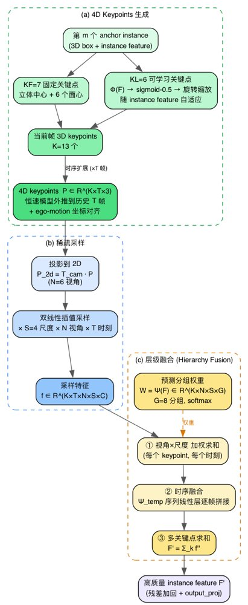
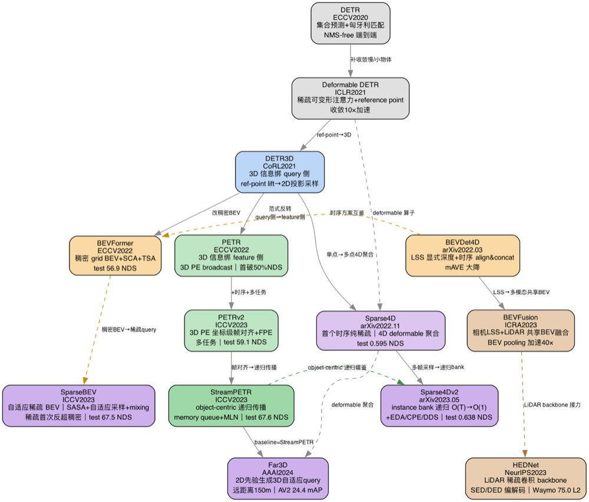
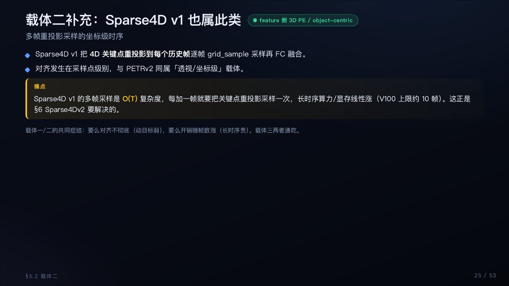

用 AI / OpenClaw Agent 解读论文
AI 怎么读、怎么把讲解越做越好、怎么自我进化，以及当前阅读策略全总结
人读论文的瓶颈，正是 AI 的切入点
- 读得慢：一篇前沿论文 + 源码，人工吃透常要一整天；图、表、公式、代码散落各处
- 留不住：读完笔记零散，几个月后等于没读；跨论文的演进脉络全靠脑子记
- 难复用：每篇都是孤立的 trick，缺一条统一主线，新论文来了无法快速定位
- 讲不透：只摘 abstract 和结论，架构细节、维度变化、真实代码很少落到笔记里
一条 arXiv 链接 → 一篇深度解读的 6 步流水线
拿论文
arXiv/PDF → 校验完好性
抽图表
pdffigures2 抽 figure/table
读主体
pdftotext + 源码克隆
规划
图表→章节映射清单
写文档
12 章交错写入飞书
归档
wiki 节点分类入库
- 每步都有明确产出物和质量校验：抽图后校验 non-white>5% + 四周留白<12%；写入前必出「图表→章节」映射清单
- 失败即兜底：PDF 损坏→arXiv 重拉完好版；pdffigures2 抽不出→PyMuPDF caption 反向定位
「深度七件」：把论文从读懂到吃透的硬标准
① 摘要逐句拆解
abstract 按句拆，每句引原文+中文解读
② 痛点→对策映射表
论文每个缺陷与每个模块对策一一对死
③ 公式编号+符号速查
Eq.1~N 逐条讲，每个符号标物理含义
④ 核心模块结合源码
克隆仓库，给 class 结构+forward 数据流
⑤ 维度变化表
tensor 从输入到输出 shape 全程画清
⑥ 真实代码逐行
摘真实源码逐行解读，配代码流程图
⑦ 设计哲学一图速记 + 工程启发
把核心思想提炼成一张图，并写明「这套设计能怎么搬到自己的项目」。深 = 逐句 / 逐公式 / 逐 class / 逐维度的嵌入式深耕，而非堆图。
图文并茂不是堆图，是「每张图各归其位」
- 论文原图：pdffigures2 高 DPI 抽 figure/table，双重校验（整页非白 + 四周留白）才入库
- 自绘 Graphviz：整体架构 + 子模块 + 真实代码数据流图，竖向 TB、dpi=200 高清
- 交错写入：写一段文字 → 立刻贴对应图 → 再写下一段，图自然落到该章节
- 铁律：禁止「图表速查附录」式堆图；每张图都有唯一归属章节，没有无主图

讲解质量怎么一轮轮变好
📌 锚定标杆
选一篇公认讲透的解读（ReCogDrive）当深度基线，后续每篇对标它的「逐句/逐公式/逐 class」，不允许回退到偏轻的程度。
🔁 反馈即规则
用户每次指正（图放错位置、公式被吞、图模糊）当场转成 skill 里的一条铁律，下次自动规避。
✅ 双重校验
每张图上传前必跑两个脚本：整页非白>5% + 四周留白<12%，杜绝空白图/裁歪图进文档。
🧩 模板固化
12 章结构 + 文档头模板 + 公式铁律固化成 skill，保证每篇产出的下限稳定、风格统一。
踩坑 → 沉淀 → 复用：Agent 的自进化闭环
执行任务
按流水线解读论文
遇到坑
PDF坏/图模糊/公式被吞
写进 skill
转成「已踩坑」铁律
下次规避
同类问题自动绕开
- 记忆即长期能力：MEMORY.md 记下每篇 doc_token / 创新点 / 工程启发；skill 的「已踩坑表」是 Agent 的免疫系统
- 规则可执行：不是模糊经验，而是带命令、带判据的硬规则（如 公式 < → \lt、图宽>1400 才缩）
- 越用越准：解读到第 N 篇时，前 N-1 篇的所有教训都已内化，质量单调上升
这些坑，踩过一次就再不会踩
🗂️ PDF 完好性
同名论文多版本，损坏版抽出空白图 → 先 md5 + 关键页非白校验，坏了从 arXiv 重拉。
➗ 公式被吞
飞书把 < > 当 HTML 标签吞内容 → 一律换 \lt \gt，公式块不混文字。
🖼️ 图被拉糊
sips -Z 按最长边缩，竖图变细窄条 → 改 --resampleWidth，只缩不放。
📍 图放错位
堆「图表附录」让人工拖 → 交错写入，写一段贴一图，每图归位。
🗄️ 归档丢内容
先建文档再 wiki create 会建空文档 → 先 wiki create 拿 token 再写入。
⚡ 触发限流
并发 delete/insert 触发 429 → 串行操作，从高 index 往低 index 改。
当前论文阅读策略一览
- 会话隔离：长论文/重度代码解读默认开新 session，不在长会话里反复切题，控成本、防串味
- 历史压缩：必须续聊时先把上下文压成结论/清单/阶段摘要，不长期携带全量历史
- 谱系成线：单篇解读完，按技术演进串成主线综述（如 DETR→PETR 14 篇），新论文能秒定位坐标
- 必归档：技术产出第一时间入飞书知识库对应分类，不停在聊天里；记忆同步进 MEMORY.md
- 工程导向：每篇都落一条「能怎么搬到 E2E Occupancy 项目」，读论文直接服务于手上的活

方法论已跑通，产出可复用
- 已落地：数十篇前沿论文深度解读，全部图文并茂归档进飞书知识库，按 OCC/BEV/VLA/3D 检测分类
- 成主线：DETR→PETR 系 14 篇串成全景综述，并产出 53 页图文 PPT
- 可进化：skill「已踩坑表」持续增长，每篇解读质量单调上升
- 下一步：把流水线进一步自动化——一条链接触发，Agent 自跑抽图→深读→归档全程
